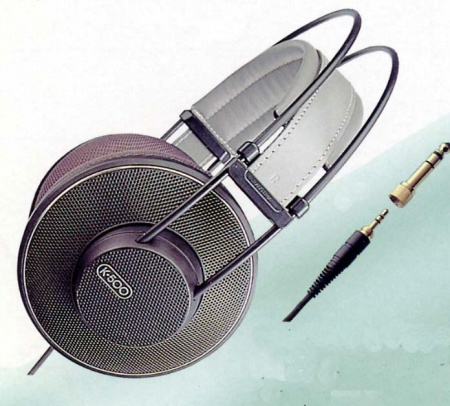

K500

■価格 47,500円■型式 ダイナミック型オープンエアタイプ■振動板 ■インピーダンス 120Ω■再生周波数帯域 15-35,000Hz■許容入力 200mW■感度 94dB/1mW■コード 3mOFC ステレオ２ウェイプラグ■重量 235g（コード含まず）■発売 1991年■販売終了 1997年頃■備考 価格は93年のもの95年までに大幅な値下げがあり、30,000円となった
AKGのインデックスへ